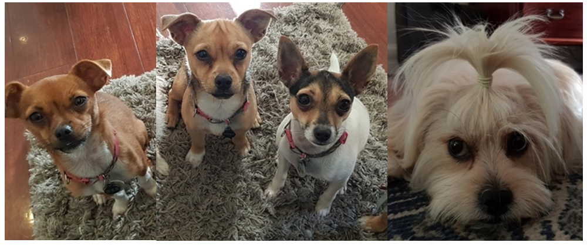
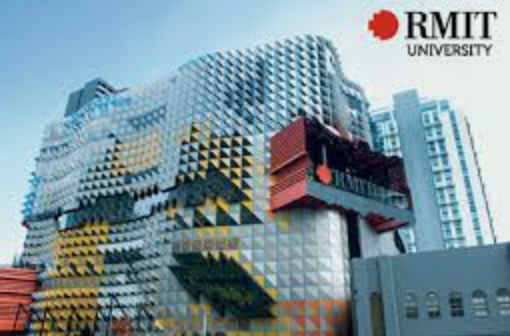

Life

- Living with my supportive partner & 4 dogs (Mon + Dad + Daughter + Son)
- Cooking meals at home, then doing dishes
- Quiz and Puzzles on the Newspapers
- Gardening : building a smart farm at home
- Volunteer at the local hospital
- Playing the piano, ukulele and violin
My life has been changed a lot. Now I cook my own meals and do the dishes.
My partner and I work from home. Our spoiled 4 dogs get 3 or 4 walks a day.
With more than Full Time study, I spend a lot of hours on the studying and assignments.
I do have regular debation time with my partner regarding politics, world issues, socio-economic matters, climate changes, finances and arts.
I always struggle to find time to catch up with people.
Study / Why RMIT

- Master's Public Policy
- Bachelor of Computer Science + Information Technology
- Coursera, Edx, CompTIA
I love studying. It does not mean I love exam or test. I just love learning something that I did not know yesterday and realize there are so many things that I do not know.
Everyday I realize what I did not know yesterday.
This is the main reason I do study.
We use computer everyday. I would like to know the tools I use and heavily depend on for many different things.
Also, I would like to make robots and IoT products to make our lives more efficient.
Therefore, I need to study Computer Science.
I am currently studying Master's Public Policy (my speicalty is Cybersecurity). I would like to be a real advisor and law maker with a real knowledge of Cybersecurity.
Therefore, I study Cybersecurity.
My 24 hours are booked out. I could not afford to attend on-campus courses. RMIT offers online degree which is perfect for me. This is my primary reason to choose RMIT.
Work
- Health Care Business Advisor
- Aged Care and NDIS specialist
- Registered Nurse
- Internship in a IT global company
- Start-Up 76
I run my own consulting company and a start-up business. I have regular clients for business advisors, nurses education & training and IT support.
Last year, I had an opportunity to be a part of the Global IT company. This is an internship program at Master's degree in USA.
I prefer to work while I am learning.
Currently, I am building a smart farm at home for my vege garden and developing a Web App for Community Health Care system.